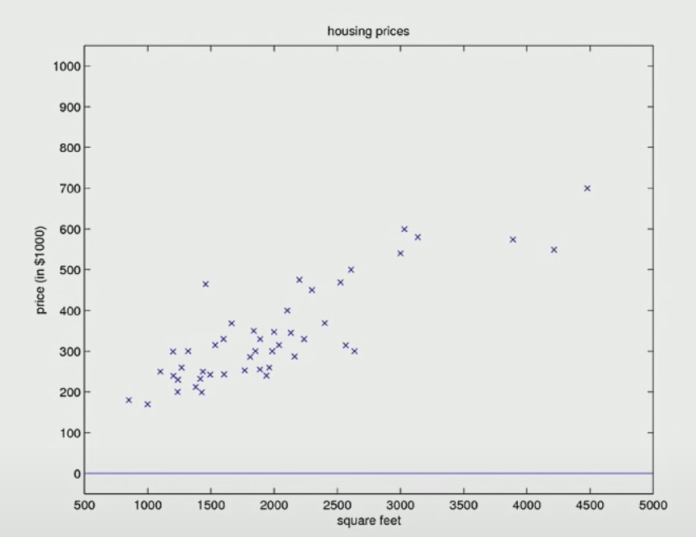
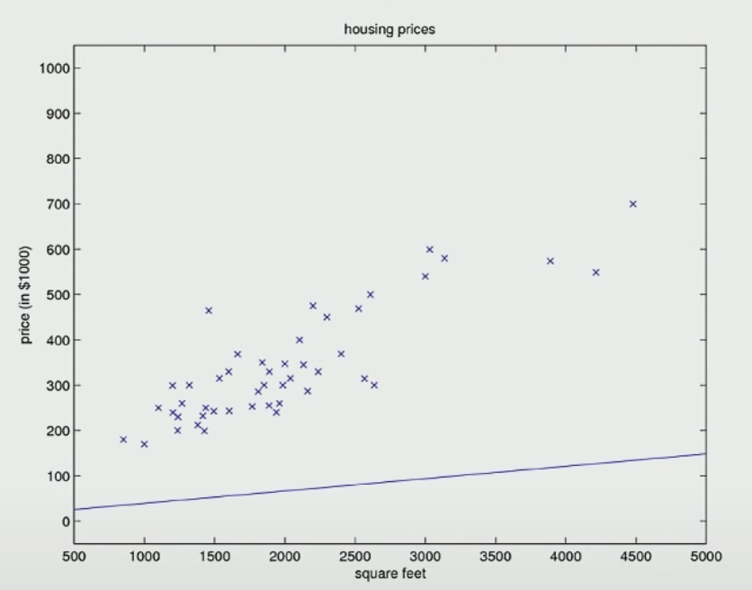
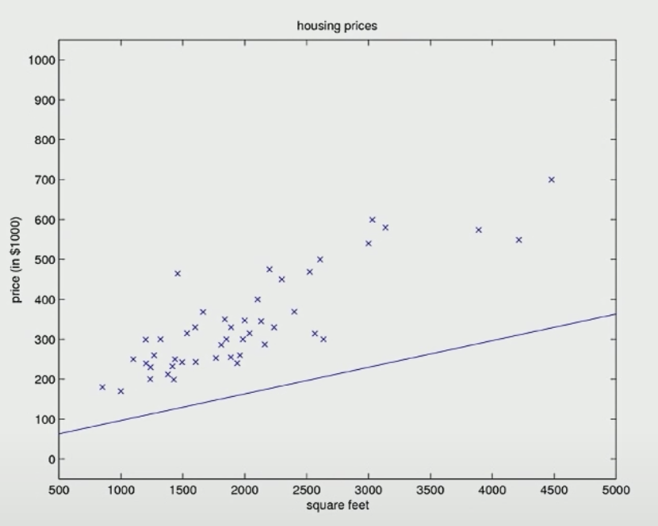
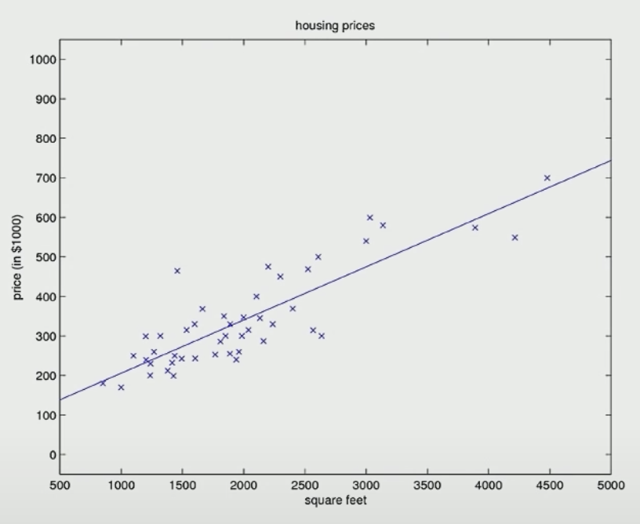

Lec 02-Linear Regression - Gradient Descent
Contents
Lec 02-Linear Regression - Gradient Descent#
Assume there is house property dataset, with size and price, and goal is to have a function which can predict the price given size
in supervised learning, we have a training set, which we fed to learning algorithm, whose job is to output a function h or hypothesis, which can make predictions about housing prices
the job of hypothesis for a given house size, it gives price estimation
Question
how to represent learning algorithm h?
Notations#
\(\theta\) - parameters or the weights of learning algorithm parameterizing the space of linear functions mapping from \(x\) to \(y\)
choose \(\theta\) such that \(h(x) \approx y\) for training examples
\(x_{j}^{(i)}\) - inputs/features - \(j^{th}\) training example of ith feature in the training set ( a bit confusing with i/j and subscript/superscript)
input features
\(x_{1}\) - size of house
\(x_{2}\) - # of bedroom
Weight vector \(\begin{equation*} \theta = \begin{bmatrix} \theta_{0} \\ \theta_{1} \\ \theta_{2} \end{bmatrix} \end{equation*}\)
Feature vector \(\begin{equation*} x = \begin{bmatrix} x_{0} \\ x_{1} \\ x_{2} \end{bmatrix} \end{equation*}\), where \(x_{0}\) = 1
\(y\) - output
\((x, y)\) - one training example
\((x^{(i)}, y^{(i)})\) - \(i^{th}\) training example
\(h_{\theta}(x)\) - hypothesis
hypothesis depends on both the parameters \(\theta\) and the input features \(x\)
\[h_{\theta}(x) = \sum\limits_{i=0}^{n}\theta_{i}x_{i} = \theta^{T}x\]
\(J(\theta)\) - cost function
choose values of \(\theta\) so that the equation below is minimized
adding 1/2 makes math a little bit simpler
why squared error?
will talk about it during generalized linear models (GLM)
\[ J(\theta) = \frac{1}{2}\sum\limits_{i=1}^{m}(h_{\theta}(x^{(i)}) - y^{(i)})^{2} \]
m - number of training examples (# of rows)
n - number of features
number of dimensions is n+1 because of constant
Gradient Descent#
find an algorithm that minimizes the cost function
generally speaking if you run gradient descents on linear regression, we don’t end up with local optimum
Least Mean Squares (LMS) algorithm#
horizontal axis - \( \theta _{0} \space and \space \theta _{1} \)
vertical axis - look all around you - keep changing \( \theta \) to reduce the \( J(\theta) \)
\( J(\theta) \) - cost function
start with some \( \theta \) (say \( \theta = \overrightarrow{\rm 0} \) )
keep changing/moving till you reach at the global minima and not local minima
Use \( := \) sign for assignments
\( \theta _{j} := \theta _{j} - \alpha \frac{\partial}{\partial \theta _{j}}J(\theta) \) - Eq 1
\( \alpha \) is the learning rate
for each value of \( j = 0,1,2,..n \), for n features
\( a := a + 1 \) - means increment the value of a and assign it to a
\( a = b \) - means that is an assertment that it is a fact that a is equal to b
derivative of function defines the direction of the gradient
assuming for 1 training example..
\( \frac{\partial}{\partial \theta _{j}} J(\theta) \)
\( = \frac{\partial}{\partial \theta _{j}} \frac{1}{2} (h _{\theta}(x) - y)^{2} \)
\( = (h _{\theta}(x) - y) \frac{\partial}{\partial \theta _{j}} (\theta _{0} x _{0} + \theta _{1} x _{1} + .. \theta _{n} x _{n} - y) \)
partial derivative of every term will be 0 other than \( \theta _{j} \) term, which resolves into following
\( = (h_{\theta}(x) - y).x_{j} \)substituting in Eq1
\( \theta _{j} := \theta _{j} - \alpha (h_{\theta}(x) - y).x_{j} \)
for “m training example”, the above results in:
\( \theta _{j} := \theta _{j} - \alpha \sum_{i=1}^m (h_{\theta}(x^{(i)}) - y^{(i)}).x_{j}^{(i)} \) - Eq 2all that is done, that sum over all m training examples, where \((i)\) is the \( i^{th} \) training example.
Gradient descent algorithm is to be repeated till it convergences
for each value of \( j = 0,1,2,..n \), for “n features” ( in this example it’s 2)
Cost function#
\(J(\theta)\) has no local optima, it has only global optimum
other way to look into the cost function is to look at the contours of this curve - ellipses
if GD is run on this
if \alpha is too large - it will overshoot
if you look into the contours, the direction of steepest descent is always orthogonal to contour direction
try a few values, to
If cost function is increasing, it indicates that the learning rate is too large
try few values at exponential rate, 0.02, 0.04, 0.08, 0.16, .. - which tells you the direction
Convergence#
training egs here are 49
initially hypothesis - \( \theta _{0} \space and \space \theta _{1} \) are assigned the value 0 - the cost function result will be too high
after each iteration hypothesis, the cost function is minimized by the gradiend descent algorithm
eventually it converges
Iteration - Base
\(\tiny{\text{YouTube-Stanford-CS229-Andrew Ng}}\)Iteration 0 
\(\tiny{\text{YouTube-Stanford-CS229-Andrew Ng}}\)Iteration 1 
\(\tiny{\text{YouTube-Stanford-CS229-Andrew Ng}}\)Iteration 2 
\(\tiny{\text{YouTube-Stanford-CS229-Andrew Ng}}\)Iteration n 
\(\tiny{\text{YouTube-Stanford-CS229-Andrew Ng}}\)
Question 1#
Why is negative \(\alpha\) multiplied to the gradient descent, instead of positive \(\alpha\) ?
because you will go uphill the gradient descent instead of going downhill
Question 2#
When do you stop
Plot \(J(\theta)\) over time
linear regression does not have local minima, so you will not have the problem of convergence
but training nonlinear like neural network will have such acute problem of convergence
Batch Gradient Descent#
we look into data in batches - for example in this case, there is a batch of 49 training example
disadv
if we have a large dataset, inorder to make one single step of gd, we will have to calculate the sum of Eq 2 above
if m is 1M, to make one step we will have to iterate over 1M times
Stochastic Gradient Descent#
Alternative to Batch GD
instead of scaning through 1M training examples, we loop over i (features) to update for all j from 1 to n, using 1 training example
this never truely converge
but makes very faster progress
Mini-Batch Gradient Descent
Normal Equation#
If our goal is to solve linear regression, we dont need to run the process iteratively
we can solve for the optimal value of parameter \(\theta\) straight-away
this works only for linear regression and not anything else
Partial derivative of cost function
\( \nabla_{\theta} J(\theta) \) - derivative of \(J(\theta)\) wrt to \(\theta\), where \(\theta \in \mathbb R ^{n+1}\). In our case with \( \theta _{0} \space, \theta _{1} and \space \theta _{2} \), we have 3 dimensions of \(\mathbb R\), i.e., \(\theta \in \mathbb R^{n+1}\)
\(\begin{equation*} \nabla_{\theta} J(\theta) = \begin{bmatrix} \frac{\partial J}{\partial \theta_{0}} \\ \frac{\partial J}{\partial \theta_{1}} \\ \frac{\partial J}{\partial \theta_{2}} \end{bmatrix} \end{equation*}\)
How to find the global minima#
\[ \nabla_{\theta} J(\theta) \stackrel{set}{=} \overrightarrow{\rm 0} \]
solving this gives you a global minima
Matrix trace properties:#
tr(A) = tr A = sum of diagonal entries = \(\sum_{i}A_{ii}\)
\(tr A = tr A^{T}\)
If \( f(A) = tr AB \), then \( \nabla _{A} f(A) = B^{T}\)
tr AB = tr BA
tr ABC = tr CAB - by cyclic permutation property
\( \nabla _{A} tr AA^{T}C = CA + C^{T}A \)
The above is analogous to \(\frac{d}{da}a^{2}c = 2ac \)
How to solve for \(\theta\)#
Let the cost function
\[ J(\theta) = \frac{1}{2} \sum_{i=1}^m (h_{\theta}(x^{(i)}) - y^{(i)})^{2} \]
and design matrix
\[\begin{split}\begin{equation*} X = \begin{bmatrix} --(X^{(1)})^{T}-- \\ --(X^{(2)})^{T}-- \\ .\\ .\\ .\\ --(X^{(m)})^{T}-- \end{bmatrix} \end{equation*}\end{split}\]
and $\(\overrightarrow{\rm y} = \begin{equation*} \begin{bmatrix} y^{(1)} \\ y^{(2)} \\ .\\ .\\ .\\ y^{(m)} \\ \end{bmatrix} \end{equation*}\)$
then
\[\begin{split}\begin{equation*} X \theta = \begin{bmatrix} (X^{(1)})^{T}\theta \\ (X^{(2)})^{T}\theta \\ .\\ .\\ .\\ (X^{(m)})^{T}\theta \end{bmatrix} = \begin{bmatrix} h_{\theta}(X^{(1)}) \\ h_{\theta}(X^{(2)}) \\ .\\ .\\ .\\ h_{\theta}(X^{(m)}) \end{bmatrix} \end{equation*} \end{split}\]
Sum of all the errors the algorithm is making between prediction and actual for m training examples
= Sum of the residuals =
\[\begin{split}\begin{equation*} X \theta - y = \begin{bmatrix} h_{\theta}(X^{(1)}) - y^{(1)} \\ h_{\theta}(X^{(2)}) - y^{(2)} \\ .\\ .\\ .\\ h_{\theta}(X^{(m)}) - y^{(m)} \end{bmatrix} \end{equation*} \end{split}\]
So, we can write:
\[ J(\theta) = \frac{1}{2} \sum_{i=1}^m (h_{\theta}(x^{(i)}) - y^{(i)})^{2} \]\[ = \frac{1}{2}(X\theta - y)^{T}(X\theta - y) \]
Substituting \( \nabla_{\theta} J(\theta) \\ = \nabla_{\theta} \frac{1}{2}(X\theta - y)^{T}(X\theta - y) \\ = \frac{1}{2} \nabla_{\theta} (\theta^{T}X^{T} - y^{T})(X\theta - y) \\ = \frac{1}{2} \nabla_{\theta} (\theta^{T}X^{T}X\theta - \theta^{T}X^{T}y - y^{T}X\theta + y^{T}y) \\ \) using matrix derivative \( \\ = \frac{1}{2} (X^{T}X\theta + X^{T}X\theta - X^{T}y - X^{T}y) \\ = (X^{T}X\theta - X^{T}y) \stackrel{set}{=} \overrightarrow{\rm 0} \)
which results in
\( X^{T}X\theta = X^{T}y \) - which is called “Normal equation”
\( \theta = (X^{T}X)^{-1}X^{T}y \)
TODO#
Implement GD/SGD/MBGD with Keras/Tensorflow/PyTorch
# Code source: Jaques Grobler
# License: BSD 3 clause
import matplotlib.pyplot as plt
import numpy as np
from sklearn import datasets, linear_model
from sklearn.metrics import mean_squared_error, r2_score
# Load the diabetes dataset
diabetes_X, diabetes_y = datasets.load_diabetes(return_X_y=True)
# Use only one feature
diabetes_X = diabetes_X[:, np.newaxis, 2]
# Split the data into training/testing sets
diabetes_X_train = diabetes_X[:-20]
diabetes_X_test = diabetes_X[-20:]
# Split the targets into training/testing sets
diabetes_y_train = diabetes_y[:-20]
diabetes_y_test = diabetes_y[-20:]
# Create linear regression object
regr = linear_model.LinearRegression()
# Train the model using the training sets
regr.fit(diabetes_X_train, diabetes_y_train)
# Make predictions using the testing set
diabetes_y_pred = regr.predict(diabetes_X_test)
# The intercept
print("Intercept: \n", regr.intercept_)
# The coefficients
print("Coefficients: \n", regr.coef_)
# The mean squared error
print("Mean squared error: %.2f" % mean_squared_error(diabetes_y_test, diabetes_y_pred))
# The coefficient of determination: 1 is perfect prediction
print("Coefficient of determination: %.2f" % r2_score(diabetes_y_test, diabetes_y_pred))
# Plot outputs
plt.scatter(diabetes_X_test, diabetes_y_test, color="black")
plt.plot(diabetes_X_test, diabetes_y_pred, color="blue", linewidth=3)
# plt.xticks(())
# plt.yticks(())
plt.show()
Intercept:
152.91886182616113
Coefficients:
[938.23786125]
Mean squared error: 2548.07
Coefficient of determination: 0.47
import sklearn.metrics as metrics
def regression_results(y_true, y_pred):
# Regression metrics
explained_variance=metrics.explained_variance_score(y_true, y_pred)
mean_absolute_error=metrics.mean_absolute_error(y_true, y_pred)
mse=metrics.mean_squared_error(y_true, y_pred)
mean_squared_log_error=metrics.mean_squared_log_error(y_true, y_pred)
median_absolute_error=metrics.median_absolute_error(y_true, y_pred)
r2=metrics.r2_score(y_true, y_pred)
print('explained_variance: ', round(explained_variance,4))
print('mean_squared_log_error: ', round(mean_squared_log_error,4))
print('r2: ', round(r2,4))
print('MAE: ', round(mean_absolute_error,4))
print('MSE: ', round(mse,4))
print('RMSE: ', round(np.sqrt(mse),4))
regression_results(diabetes_y_test, diabetes_y_pred)
explained_variance: 0.5349
mean_squared_log_error: 0.2171
r2: 0.4726
MAE: 41.2271
MSE: 2548.0724
RMSE: 50.4784